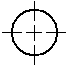
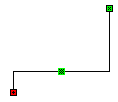
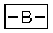
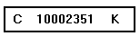
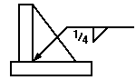
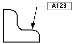
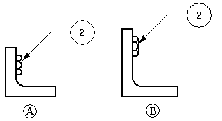

Annotations
An essential part of the design process is adding text, notes, and annotations. Annotations are text and graphics that give information about the design. You can add annotations to a drawing, a part, or an assembly by using the text and annotation commands in the software.
Types of annotations
To place annotations, you can use the following commands:
-

-

-

-

-

-

-

-

-

-

-

-

-

-

-
Technical Requirements
(1) Break all sharp edges at 1:00 mm.
(2) Paint non-machined surfaces blue.
-

-

Annotations with borders
The Callout command and the Text command create annotations that can be displayed with or without a border outline. Text formatting and behavior control options are available to ensure that the content always fits within the border.
To create an annotation with the appearance shown in the following illustration, you can do either of the following:
-
Use the Callout command with the Show border outline option selected.
-
Place a text box using the Text command, and then add a leader to it with the Leader command.

Annotations and associativity
Annotations can be associative or non-associative. An associative annotation moves when the element it is connected to moves. Text boxes differ from other annotations in that they are always non-associative.
If you attach the terminator of a leader to an element (A), the annotation moves with the element (B). If you create the leader connection point in free space, the annotation is not associative to any element in the drawing.

You can make a connected annotation non-associative by pressing the Alt key while you drag the terminator handle off the element.
You can make a free space annotation associative by selecting the terminator of the leader and dragging it to an element. The element edge highlights to show that it is connected.
You can move a leader line connection point to free space or to another element yet retain associativity with the first element, by pressing the Alt+Ctrl keys while dragging the terminator handle.
Snapping to keypoints and intersection points
When placing many types of annotation and when measuring distance, you can use shortcut keys to select and snap to keypoints or intersections. After you locate the line, circle, or other element that you want to snap to, you can press one of these shortcut keys to apply the point coordinates to the command in progress: M (midpoint), I (intersection point), C (center point), and E (endpoint).
To learn more, see the help topic Selecting and snapping to points.
Formatting annotations
If you want annotations to look the same, you can apply a style by selecting it on the command bar. Text styles can be applied to text boxes and technical requirements. You can apply dimension styles to the following annotations:
-
surface texture symbol
-
center marks, centerlines, and bolt hole circles
If you want to customize the look of one or more annotations, you can select an annotation and edit its properties with the command bar or the Properties command on the shortcut menu.
Aligning annotations
You can use the Line Up Text command to align annotations by their text, using alignment options you select on the Line Up Text command bar. Two other options on the command bar align annotations using their leader break points.
Saving annotations
When an annotation, such as a feature control frame, appears several times, you can save the settings so that you can use them again. You can save any of the settings for a feature control frame, weld symbol, or surface texture symbol in a template with a name that you specify, much like a style.
Tracking changed dimensions and annotations
When you update a drawing view in the Solid Edge Draft environment, you can identify dimensions and annotations that have been changed or deleted in the model. To open the Dimension Tracker dialog box so you can identify these changes, use the Tools→Dimensions→Track Dimension Changes command.
-
On the drawing, every changed dimension and annotation is flagged by a revision balloon.
-
On the Dimension Tracker dialog box, changed items are displayed in a columnar format. You can sort the changes by clicking a column heading.
-
You can select one or more items in the list and assign a revision name to the balloon labels on the drawing.
To learn more, see Tracking dimensions and annotations.